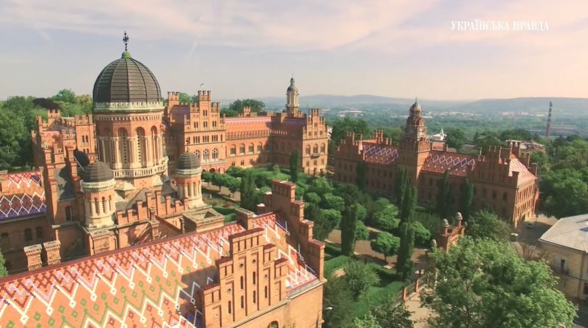
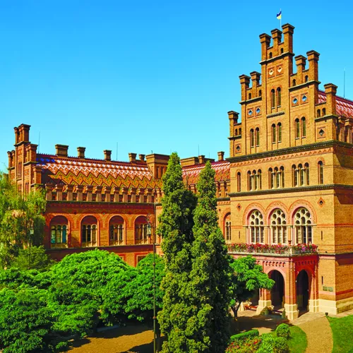

Як створювали чернівецький університет?
Чернівецький національний університет — один із найстаріших і найвідоміших університетів України. Його головні будівлі розташовані у колишній резиденції митрополитів Буковини і Далмації, яка входить до списку Світової спадщини ЮНЕСКО. Її будували 18 років — з 1864 до 1882 року. Для цього навіть відкрили спеціальні заводи з виготовлення цегли та черепиці і запросили найкращих майстрів з усієї Австро-Угорщини. Будівництво було дуже якісним.
Проєкт створив відомий чеський архітектор Йозеф Главка, який також будував Віденську оперу. Резиденцію збудували в стилі еклектики. Стіни прикрашені візерунками з теракоти, а вікна обрамлені білим пісковиком. Особливо красиві дахи — вони вкриті кольоровою черепицею, що нагадує буковинські народні килими.
Будівництво коштувало дуже дорого — 1 мільйон 750 тисяч гульденів. На ті гроші тоді можна було купити 260 тисяч коней. Більшу частину витрат оплатив Буковинський православний релігійний фонд.
У 1872 році депутат Костянтин Томащук запропонував створити в Чернівцях університет. На той час різні міста Австро-Угорщини хотіли мати університет, але імператор Франц Йосиф обрав саме Чернівці. Першим ректором став Костянтин Томащук. До викладання запросили більше сотні професорів з Австрії, Німеччини та Швейцарії.
Спочатку університет мав три факультети: теологічний, правничий і філософський. У перший рік навчалося 208 студентів, серед яких 41 українець. До 1914 року кількість студентів зросла до майже 1200.
Навчання проводили німецькою мовою, але студенти-богослови читали твори Івана Котляревського та вивчали старослов’янську граматику. Також викладали історію України. Навчання тривало чотири роки і було платним — студенти платили не лише за навчання, а й за іспити та деякі лекції. У різні роки в університеті навчалися й відомі українські діячі: Іван Франко, Денис Лукіянович, мовознавці Олександр Колесса та Юліан Кобилянський. Тут бували Михайло Драгоманов, Леся Українка та Володимир Винниченко.
У 1989 році університету присвоїли ім’я Юрія Федьковича. Сьогодні його територія — не тільки місце навчання, а й відомий туристичний центр Буковини.